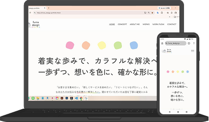
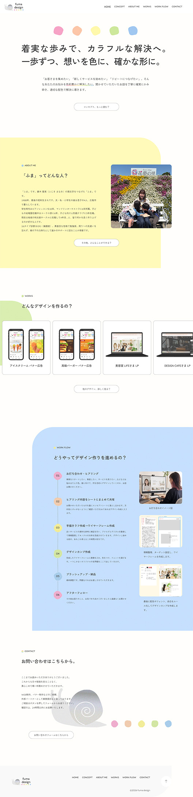

制作期間
2ヶ月間
使用ツール
Figma, Photoshop, Illustrator, VSCode(HTML, CSS, JavaScript, jQuery), GitHub
担当範囲
デザイン&コーディング実装
情報整理、ラフ作成、ワイヤーフレーム作成、デザインカンプ作成、デザインカンプを基にコーディング
なぜこのデザイン？
「親しみやすさ、やさしさ、安心感、有機的、穏やか」をコンセプトキーワードに設定。フォントは端末問わず読みやすい柔らかい印象のゴシック体を使用しています。カラフルな配色も子供っぽさが出ないように明るく鮮やかな色を選び、色の周りには白地の背景と余白をたっぷりとることで風通りのいいデザインに仕立てました。